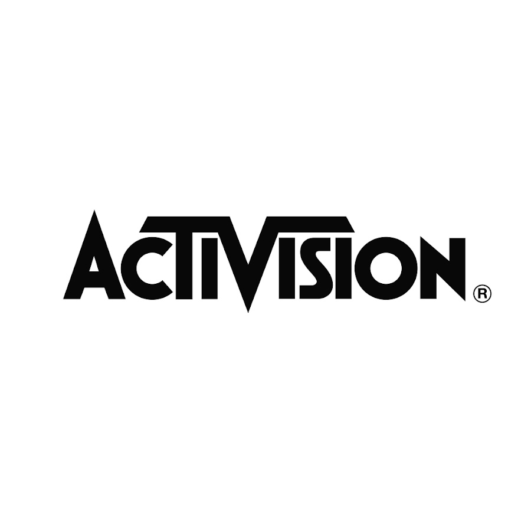

Mi is az a Destiny?
Kihez köthető?
Elnyert díjak
A Destiny egy online first-person shooter videojáték, amelyet a Bungie fejlesztett ki. Világszerte 2014. szeptember 9-én jelent meg PlayStation 3, PlayStation 4, Xbox 360 és Xbox One konzolokra. A Destiny a Bungie első új konzolos franchise-ját jelentette a Halo-sorozat óta, és ez volt az első játék a Bungie és az Activision közötti tízéves megállapodásban. A játék egy „mitológiai sci-fi” világban játszódik, és többjátékos „megosztott világú” környezetet kínál, szerepjátékos elemekkel.
Az Activision Publishing, Inc. egy amerikai videojáték-kiadó, amelynek székhelye a kaliforniai Santa Monica városában található. Anyavállalatának, az Activision Blizzardnak a kiadói tevékenységét látja el, és több leányvállalat stúdiójából áll. Az Activision a világ egyik legnagyobb harmadik féltől származó videojáték-kiadója, és 2016-ban az Egyesült Államok első számú kiadója volt.
2023 - Nominee Award
2022 - Golden Joystick Award
2020 - Best Ongoing Game Award
2019 - Best Community Award
2022 - Golden Joystick Award
2020 - Best Ongoing Game Award
2019 - Best Community Award

